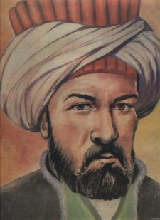

Katip Çelebi
Tarih, coğrafya ve bibliyografya alanında önemli yapıtlar vermiş, medrese düşüncesini eleştirmiştir.
Şubat 1609'da İstanbul'da doğdu, 6 Ekim 1657'de aynı yerde öldü. Asıl adı Mustafa'dır. Doğu'da Hacı Halife, Batı'da ise Hacı Kalfa adıyla da tanınır.
Babası Abdullah Enderun'da yetişmiş, silahdarlık göreviyle saraydan ayrılmıştı. 14 yaşına kadar özel eğitim gören Kâtib Çelebi, 1623'te Anadolu Muhasebesi Kalemi'ne girdi.
IV. Murad döneminde (1624-1640) girişilen Doğu seferlerinde kâtib olarak katıldı. 1635'te İstanbul'a dönerek kendisini tümüyle okuyup yazmaya verdi.
Dönemin ünlü bilginlerinin derslerine katılarak medrese öğrenimindeki eksikliklerini giderdi. Tarihten tıbba, coğrafyadan astronomiye kadar geniş bir ilgi alanı olan Kâtib Çelebi'nin aynı zamanda zengin bir kitaplığı da vardı.
1645'te sırası geldiği halde yükselemediği için kalemdeki görevinden ayrıldı. Ancak 1648'de Takvimü't-Tevarih adlı yapıtı dolayısıyla şeyhülislam Abdürrahim Efendi aracılığıyla kalemde ikinci halifeliğe getirildi. Bundan sonra da öğrenme ve öğretme yolundaki çabalarını sürdüren Kâtib Çelebi peşpeşe yapıtlar vermeye başladı.
Telif ve çeviri olarak yirmiyi aşkın kitap yazdı. En önemlileri tarih, coğrafya ve bibliyografyaalanındadır. Ayrıca dönemin medreselerinin din bilimleri ve pozitif bilimler alanındaki durumunu sergilediği ve eleştirdiği yapıtlarıyla da tanındı.
Tarih alanındaki yapıtlarının ilki 1642'de tamamladığı Arapça Fezleke'dir. (Fezleketi Akvâlü'l-Ahyâr fi İlmi't-Tarih ve'l-Ahbar). Dört bölümden oluşan kitapta tarihin anlamı, konusu ve yararı anlatıldıktan sonra bu alandaki temel yapıtların bir bibliyografyası verilmiş, ardından da klasik İslam tarihçiliğine uygun olarak dünyanın yaratılışından 1639'a dek kurulan devletler ve meydana gelen önemli olaylar kısaca sıralanmıştır. Arapça Fezleke'nin devamı niteliğindeki Türkçe Fezleke 1591-1654 arasındaki olayları anlatan bir Osmanlı tarihidir. Olayların kronolojik sıralamasının ardından her yılın sonunda o yıl içerisinde ölen devlet adamları ve bilginlerin yaşam öykülerinden ve yapıtlarından da kısaca söz eder. Takvimü't-Tevarih ise, Adem Peygamber'den 1648'e kadar geçen tarihsel olayların bir kronolojisidir.
En tanınmış yapıtlarından olan Tuhfetü'l-Kibar fi Esfari'l-Bihar'da kuruluş döneminden 1656'ya kadar Osmanlı denizciliğinin bir tarihçesi yanında Osmanlı donanmasının, tersane ve bahriye örgütünün işleyişini anlatır, kaptan-ı deryaların yaşam öykülerini verir. Sonunda da son zamanlarda denizlerde uğranılan başarısızlıkları giderme yolundaki öğütlerini sıralar.
Coğrafi yapıtların en önemlisi olan Cihannüma Osmanlı coğrafyacılığında yeni bir çığır açmıştır. Kâtib Çelebi Cihannüma'yı iki kez yazmıştır. 1648'de yazmaya başladığı ilki klasik İslam coğrafyası temelindeydi. Bu yapıtını henüz bitirmemişken eline geçen Gerardus Mercator'un Atlas'ını Mehmed İhlasî adlı bir Fransız dönmesinin yardımıyla Latince'den Türkçe'ye çevirterek yeni bilgiler edindi ve 1654'te Cihannüma'yı ikinci kez yazmaya girişti. Ardından yine Mercator'un Atlas Minor'unu elde etti. Bunların yanı sıra Batılı coğrafyacılardan Ortelius, Cluverius ve Lorenz'in yapıtlarından da yararlandı. Doğal olarak eski Arap, İran ve Osmanlı coğrafyacıların yapıtlarını da kullandı. İkinci Cihannüma, dünyanın yuvarlak olduğunu da kanıtlamaya çalışan fiziki coğrafya ağırlıklı bir giriş bölümünden sonra Kristof Kolomb ve Macellan'ın keşif gezilerinden söz eder. Ardından Japonya'dan başlayarak Asya ülkelerini tanıtır. Bunların tarihleri, yönetim biçemleri, ekonomileri, inançları konusunda bilgiler verir. Bu arada İslam coğrafyacılarının bilgi yanlışlarını gösterir, bunların harita kullanmamaktan ileri geldiğini açıklar. Bu ikinci Cihannüma'da anlatılan son yer Van'dır. Birinci Cihannüma'da ise Osmanlı Avrupa'sı ve Anadolu ile İspanya ve Kuzey Afrika'yı kapsamaktadır. Her iki biçimde de ek olarak birçok harita vardır.
Cihannüma, özünde tüm İslam ve Hıristiyan coğrafyacılığının da temeli olan Batlamyus (Ptolemaios) kuramına dayanmakla birlite, o güne dek hemen hemen hiç yararlanılmayan Batı kaynaklarını Osmanlı coğrafyacılığına tanıtması bakımından büyük önem taşır.
Kâtib Çelebi'nin Batı'da tanınan en ünlü yapıtı Keşfü'z-Zünun an Esamü'l-Kütübi ve'l-Fünun'dur. Arapça bir bibliyografya sözlüğü olan yapıtta 14.500 kitap ve risalenin adı ve yazarı verilir. İslam dünyasında da genel kabul gören Aristoteles'in bilim tasnifine görev ve alfabetik olarak düzenlenmiş olan yapıt, yirmi yılda tamamlanmıştır.
Kâtib Çelebi'nin tarih felsefesini ve toplum görünüşünü açıklaması bakımından önemli olan yapıtı Düsturü'l-Amel li-Islahi'l-Halel'dir. Kısa kısa dört bölümden oluşan bu küçük risalede İbn Haldun'un etkisi açıkça görülür. Toplumların da canlılar gibi doğup, gelişip, öldüğü görüşünü yineleyen Kâtib Çelebi, bu dönemlerin uzunluğunun ya da kısalığının toplumlara ve kişilere göre değiştiğini de ekler. Risalede Osmanlı toplumunun ömrünün uzaması için de reaya, asker ve hazine konularında alınması gerekli önlemleri sıralar, öğütler verir.
Daha çok dinsel konuları tartıştığı yapıtlarının en önemlilerinden olan İlhamü'l-Mukaddes fi Feyzi'l-Akdes'de kuzey ülkelerinde namaz ve oruç zamanlarının belirlenmesi, dünyada güneşin hem doğduğu hem de battığı bir yerin var olup olmadığı ve her ne yana yönelirse Mekke'den başka kıble olabilecek bir yer olmadığını tartışır. Arapça olan bu yapıtında yanıtlamaya çalıştığı bu soruları daha önce şeyhülislama ve bilginlere sorduğunu, ama doyurucu bir karşılık alamadığını da belirtir.
Son yapıtı olan Mizanü'l-Hakk fi İhtiyari'l-Ahakk'da da dönemin din bilgilerinin tartıştıkları çeşitli konular hakkında düşüncelerini açıklar. Pozitif bilimlerin gerekliliğini ve bunların ortaya koyduklarının dinsel bilgilerle çatıştığını açıklayarak söze başladığı yapıtında düşünce ve kanaat farklılıklarının insanlık tarihi kadar eski olduğunu da söyler. Bunun doğal karşılanması gerektiğini ve karşıt düşüncelere hoşgörüyle bakılmasını öğütler. Din bilginlerinin kendi aralarındaki şiddetli tartışmalarının temelsizliğini ve zararlarını vurgular. Yapıtın sonunda kendi özyaşamöyküsüne yer verir.
Kâtib Çelebi, hem önemli yapıtlar vermiş hem de medresenin egemenliğindeki düşünce dünyasının dışında görüşler ileri sürmüş bir bilgindir. Gerçi ne Kopernik'i tanıyabilmiş, ne Bacon'ın bilim tasnifini kabullenmiştir ama, Batı kaynaklarının önemine dikkati çekmesi Latince öğrenmeye çalışması, bu dilden yapıtlar çevirmesi, Doğu kaynaklarına eleştirel bir gözle bakması bile dönemine göre çok ileri adımlardır.
Katip Çelebi'nin Eserleri
1. Cihannümâ: Coğrafya mevzuunda yazılmıştır. Kâtib Çelebi bu eserini, eski İslâm coğrafyacılarından, XVI. yüzyıl Türk coğrafî eserlerinden, bilhassa Mehmed Âşık'ın Menâzir ül-Avâlim adlı kitabından ve daha önemlisi bazı Avrupa kaynaklarından faydalanarak meydana getirmiştir. İbrahim Müteferrika tarafından neşredilen bu eser, bir kaç defa Avrupa dillerine tercüme edilmiştir. Eserin güzel bir yazması Paris'te Biblioteque National'dedir. (E.Blochet Katalogu C.I.s. 265, Paris, 193.2)
2. Fezleke:KâtibÇelebi'nin tarihle ilgili mühim eseridir. Fezleke Arapça yazılmış bir umumî tarih kitabıdır. Bu eseri meydana getirmek için Kâtib Çelebi çok sayıda tarih kitabı okumuş, notlar almış ve derin bir tarih kültürüne sahip olmuştur. Eser 1592 senesinden başlayarak, 1654 tarihine kadar geçen olayları ihtiva eder. Atıf Ef. kütüp., nr. 1914'te bulunan yazmanın başındaki bir çok sahifeler Kâtib Çelebi'nin el yazısıdır.
3. Takvim üt-Tevârih: Hz. Âdem'den 1648 tarihine kadar geçen zamanda tarihlerin zikrettiği ve diğer tarih kitaplarının, bilhassa Arapça, Fezleke'-nin kronolojik fihristi mahiyetindedir. Eser Avrupa dillerine tercüme edilmiştir. (Babinger, Stambuler Buchwesen 16 ve GOW, s. 197)
4. Tuhfet ül-Kibâr:1645 yılında başlayan Girid Seferi dolayisiyle, eserin yazıldığı 1656 yılı başlarına kadar geçen hâdiseleri anlatan bir eserdir. İbrahim Müteferrika Matbaasının bastığı kitaplar arasındadır.
5. Kanun-nâme: 1654-1655 yılları arasında toplanmış bir kanun mecmuasıdır.
6. Târih-i Frengi Tercümesi: Johan Carion'un "Chronik" adlı eserinin tercümesi olup, bazı kısımları Tasvîr-i Efkâr gazetesinde neşredilmiştir.
7. Târih-i Kostantiniyye ve Kayasira: 1579 yılma kadar doğuda geçen hadiseleri ihtiva eder. Tercüme ve seçme yoluyla meydana getirilmiş bir eserdir.
8. İrşâd ül-Hayârâ ilâ Târih il-Yunan ve'n-Nasara: İslâm tarihlerinde Avrupa memleketleri hakkındaki eksiklik ve yanlışlıkları telâfi etmek üzere, yazılmış küçük bir risaledir. Eserde muhtelif memleketlerin idare tarzları, demokrasi, aristokrasi, cumhuriyet v.b. seçilme usûlleri ve Osmanlılar ile münasebetleri anlatılmaktadır.
9. Sullem ül-Vusûl ilâ Tabakât il-Fuhûl: Alfabe sırasına göre tertiplenmiş Arapça tabakat kitabıdır.
10. Levamı ün-Nûr fî-Zulme Atlas Minor: G. Mercater ve Lud Hondios, Atlas Minör (Arnheim, 1621)'un tercümesidir.
11. İlham ül-Mukaddes fi-Feyz il-Akdes: Eser, şimal memleketlerinde namaz ve oruç vakitlerinin tayini, güneşin aynı yönden doğup batmasının dünyanın herhangi bir noktasında mümkün olup olmadığı ve her ne tarafa yönelinse Kıble olabilecek, Mekke'den başka bir memleket bulunup, bulunmadığı hususlarını ihtiva etmektedir.
12. Keşf üz-Zünûn an -Esâmi'il-Kütübi ve'l-Fünûn: Büyük bir bibliyografya kamusu olup 20 yılda meydana getirilmiştir. 14.500 kadar kitap ve risale kaydedilmiş olan bu eserde 10.000 kadar müellif ve şâirin ismi zikredilmektedir. Eser, Flügel tarafından, 1835-1558 yılları arasında. Arapça metin ve Latince tercümesi ile birlikte ilk iki cildi Leib-zig'de ve diğerleri Londra'da olmak üzere, yedi cilt halinde basılmıştır.
13. Tuhfet ül-Ahyâr: Alfabe sırasına göre tertiplenmiş bir edebiyat ve tarihe ait fıkra ve hikâyeleri ihtiva eden bir eserdir. Yazma nüshaları vardır.
14. Dürer-i Muntasıra ve Gurer-i Münteşire: Bir mecmua olup, muhtelif meselelere ait faydalı bilgileri ihtiva eder. Tek nüshası Nuruosmaniye Ktp., nr. 4949 (müellif hattı ile).
15. Düstûr ul-Amel li-İslâh il-Halel: Kâtib Çelebi'nin 1652/1653 senesinde, devlet bütçesinde gelirin az olup, masrafın çoğalma sebeplerini araştırmak ve gelecek yılın vergisini peşin almayı icabettiren bütçe açığına bir çâre bulmak için, dîvân toplantısına sunulmak üzere hazırlanmış bir eserdir.
16. Mizan ül-Hakk fi'İhtiyar il-Ahakk: Kâtib Çelebi'nin en son eseri olup, 1656'da te'lif olunmuştur.